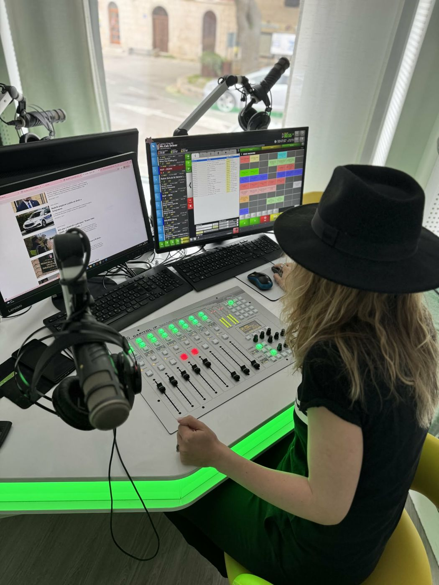
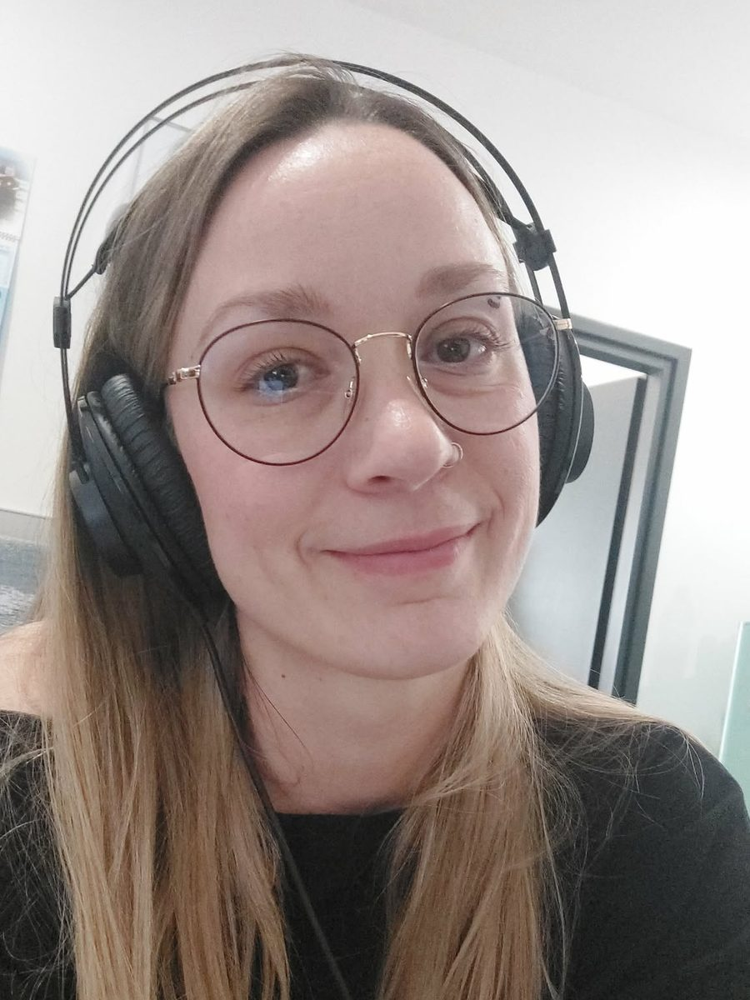

Nicole VojakŠtoković
Radijska voditeljica i novinarka. Ovdje pišem ono što ne stane u prilog.
Čitaj kolumne
Tri sekunde tišine
Na radiju postoji izraz za tišinu koja traje predugo. Zovemo je mrtvi zrak. Tri sekunde bez glasa, bez glazbe. Dovoljne da slušatelj pomisli da se nešto pokvarilo. Da mi se dlanovi oznoje, srce brže počne lupati, a oči panično tražiti uzrok. Playlista, pult, botuni, tehničar.
Gdje je greška? Što sam krivo stisnula? Ima li struje?
Iz bilježnice
- Kolumna · 30. listopada 2026. Tri sekunde tišine Kolumna o tišini u radijskom razgovoru i o tome zašto je ponekad važnija od sljedećeg pitanja.
- Pjesma · 30. listopada 2026. Majica Pjesma o jednoj majici koja je prošla ljubav, majčinstvo i sve ono što se šiva.
- Crtica · 30. listopada 2026. Jutarnji program Crtica o jutru u pekari prije posla i teti koja zna sve vijesti prije novinara.

Glas koji ste možda već čuli
Šest godina sam u eteru. Prije toga bila sam prevoditeljica, plesačica i moderatorica, a radio me pronašao gotovo slučajno: kroz talijanski jezik i jedan turistički prilog kojemu je trebao glas. Ostala sam.
Kao voditeljica i novinarka bavim se temama za koje se rijetko nađe dovoljno vremena. Zdravljem, majčinstvom, odgojem, mentalnim zdravljem. Zanima me ono što ostaje izvan vijesti: kako se živi, kako se priča, što nas dira.
Najradije slušam ljude kojima se rijetko daje riječ. U njihovim pričama naš kraj izgleda drugačije nego na razglednicama.
Ovdje zapisujem ono što ne stane u radijski prilog.
Pišite mi
Za suradnju na tekstovima, prijedloge tema i priče koje bi trebalo ispričati.